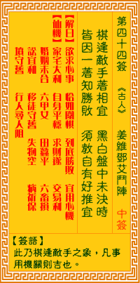

观音灵签第四十四签 【姜维邓艾斗阵】 |
 | |||
棋逢敌手要藏机 黑白盘中未决时 到底欲知谁胜负 须教先著相机宜 |
||||
| 【吉凶】 | 中中签 | 【宫位】 | 戌宫 | |
| 【签语】 | 此卦棋逢敌手之象，凡事用机关则吉也。 | |||
| 【解曰】 | 欲求心事 恰如围棋 到底胜败 宜用心机 | |||
| 【仙机】 | 此签家宅大利，自身平稳，求财遂，交易利，婚姻未合，行人寻人阻，六甲女，田蚕平，六畜损，讼宜和，移徙守旧，失物空，病祈保， 山坟守旧。 | |||
| 【详解】 | 下棋时遇到实力相当的对手应该更小心，此刻仍然拿不定主意;想要知道最后到底谁胜谁负，必定是能掌握机先，抢在前头的人。 欺求心事，如同着棋，要知胜负，先着莫疑。此签棋逢敌手之象，凡事先吉。 本签为棋逢敌手之象也。凡事先吉。凡未小心。节俭则有转恶之嫌。宜小心为之。棋逢敌手之时。必藏有机。决定胜负之时莫迟疑。认为可行则毫不犹豫之下即可。尤应和者。善有善报。恶有恶报。示人早知觉悟多作善。方能有善报者。 此签有”多方思考”之意。意味当事人，谋定而后动。在面对事情时，不论大小，要能从里到外、仔细地分析判断。保持清明的理智与思路，冷静而缜密地假设任何可能发生的状况，模拟并想出因应之道。眼观四路、耳听八方，着眼大处时，也要兼顾细节。另外，在情况不佳而本身又处于较不利的弱势时，如果想硬碰硬，无异以卵击石，绝对没有好处。不妨请教志同道合的人，共同商议。借着众人集思广益所想出的办法，也较能万无一失。大家有志一同、互相砥砺，相信定能扭转颓势、迎向成功之路。 | |||
| 【典故】 | 三国故事：姜维是蜀国猛将，邓艾是魏国（司马昭）大将，姜维出兵伐魏，双方军队会师于祈山之前。首先姜维摆了阵势，乃是诸葛亮之 法，邓艾以十万兵士冲击，皆被打败，次日，姜维摆八卦阵，邓艾也摆八卦阵，复变为八八六十四门户，姜维军进入阵内，变为长索卷地阵，邓艾不能破，被困在中间，幸得司马 望赶来救出。《三国演义》故事 | |||